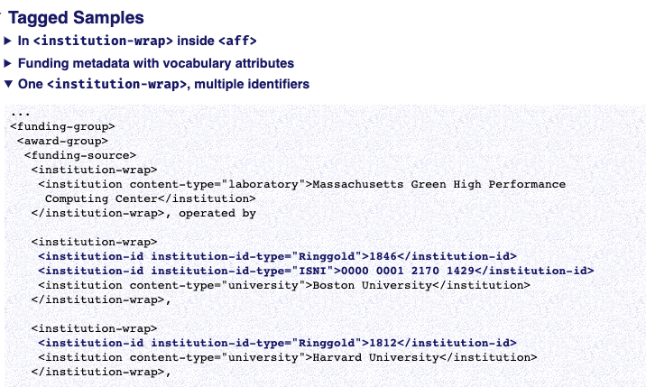

Most elements and some attributes are given more than one tagged sample (some have over a dozen). To differentiate the samples and lead a user more directly to the one that matches their situation, each sample has a heading that tries to explain why the sample was included, what it is trying to illustrate. One of the more common complaints of JATS users is that the sample they want or need is nor present.
Figure 31. Samples for <institution-id>
|  |
Samples are maintained as valid XML fragments that are parsed for validity each time the DTD changes. Processing instructions inside the fragments are used to create the bold focus. Some samples are nearly full documents, others are as small as possible:
<!DOCTYPE body PUBLIC "-//NLM//DTD JATS (Z39.96) Journal Publishing DTD v1.3d2 20201130//EN" "JATS-journalpublishing1-3d2.dtd"> <?mtl hellip?> <body><?mtl /hellip?> <p>And I can say without fear of contradiction <abbrev alt="Wink smile">;)</abbrev> that this political process is without flaw.</p> <?mtl hellip?></body><?mtl /hellip?>